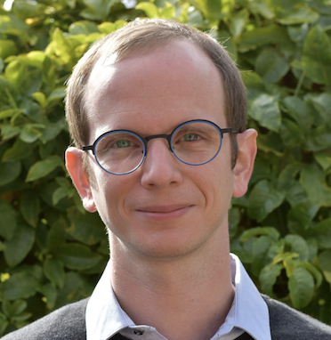
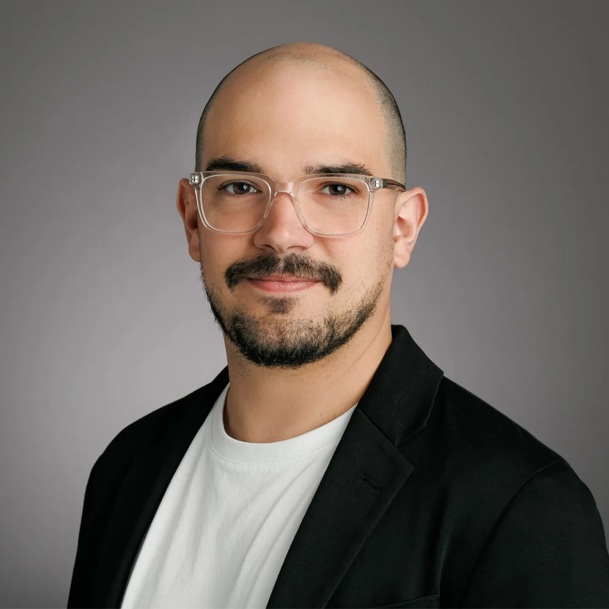
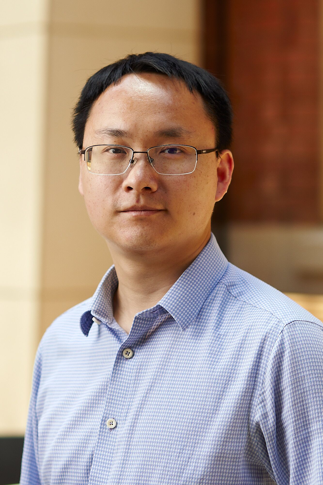
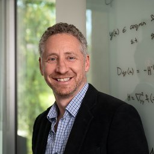
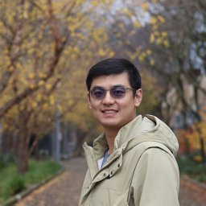
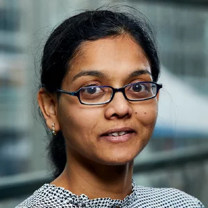
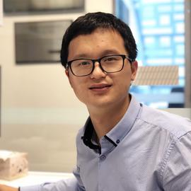

Sydney AI Meetup
Research × Industry × AI @ Sydney
create · discuss · connect
- Monthly seminars from leading AI researchers
- Recurring symposia
- For students, academics, and industry
Sydney AI Meetup is an organization that brings together HDR students, researchers, academic staff, and industry professionals in the AI community across greater Sydney, extending to Australia and international AI communities.
Through monthly seminars and recurring symposia, we create a platform for substantive, tech-oriented discussion, new partnerships, and opportunities for joint research and industry internships — driving innovation and knowledge exchange in AI.
Join the LinkedIn Community →| Title | NVIDIA GTC Highlight and Top Tech |
| Speaker 1 | Dr Susan Zhang, NVIDIA |
| Speaker 2 |  Dr Johan Barthelemy, NVIDIA |
| Format | Susan covered the GTC highlights and the NVIDIA Inception program (25 min). Johan presented the latest from NVIDIA, including NemoClaw and other key developments (25 min). Followed by a 10-minute Q&A. Total: 1 hour. |
| Date | Friday, 1 May 2026 |
| Time | 1:00PM-2:00PM Canberra, Melbourne, Sydney |
| Delivery | Online (Zoom) |
| Join the LinkedIn Group Sydney AI Meetup Community for the latest event update, discussion, and networking. | |
| Title | Optimality and Robustness in Robotic Exploration |
| Speaker |  Dr Ian Abraham, University of Sydney |
| Intro | Effective exploration is a vital component in the success of robotic applications in ocean and space exploration, environmental monitoring, and search and rescue tasks. This talk presents a novel formulation of exploration that permits optimality criteria and performance guarantees for robotic exploration tasks. We define the problem of exploration as a coverage problem on continuous (infinite-dimensional) spaces based on ergodic theory and derive control methods that satisfy various notions of optimality and robustness such as asymptotic coverage, set-invariance, time-optimality, and reachability in exploration tasks. Last, we demonstrate successful execution of the approach on a range robotic systems and present an outlook on novel directions for robot learning. |
| Date | Wednesday, 8 Apr 2026 |
| Time | 11:00AM-12:30PM Canberra, Melbourne, Sydney |
| Register | Link |
| Delivery | Online, Register to see the link |
| Join the LinkedIn Group Sydney AI Meetup Community for the latest event update, discussion, and networking. | |
| Title | Reconstructing the Unseen: From Detail Recovery to Structure-Guided 3D Generation |
| Speaker |  A/Prof Lingqiao Liu, Adelaide University |
| Intro | A central challenge in 3D vision is the reconstruction of what cannot be directly observed. Real-world observations are inherently incomplete: objects are partially visible, captured at limited resolution, or observed from restricted viewpoints. Traditional reconstruction methods are therefore constrained by available measurements, while recent generative approaches often produce visually plausible results without sufficient geometric grounding. This talk presents a research trajectory that addresses the problem of reconstructing the unseen by progressively integrating generative reasoning into 3D modeling. The first part of the talk examines recovering unseen details within reconstruction, where generative priors are used to synthesize close-up geometry that is not clearly captured in the initial model, extending reconstruction beyond the limits of observation. The second part introduces a structural abstraction based on point clouds, representing only reliably observed geometry while learning to infer missing structure through generative completion. The final part advances this idea by embedding explicit 3D priors directly into the generative process, enabling the generation of complete 3D assets that preserve observed geometry while plausibly reconstructing unseen regions. Together, these works illustrate an emerging paradigm shift in 3D vision: reconstructing the unseen is no longer treated purely as a reconstruction problem, but as a structured generation problem guided by geometric constraints. This perspective unifies reconstruction and generation within a single framework and suggests a new direction for controllable, reliable, and scalable 3D modeling. |
| Date | 26 Feb 2026 |
| Time | 11:00AM-12:00PM Canberra, Melbourne, Sydney |
| Register | Link |
| Delivery | Online, Register to see the link |
| Recording | Link Passcode: Dvx5OD.t |
| Join the LinkedIn Group Sydney AI Meetup Community for the latest event update, discussion, and networking. | |
| Title | Learning to Forget, Learning to Remember |
| Speaker | A/Prof Mehrtash Harandi, Monash University |
| Intro | Modern machine learning systems must navigate a dual demand, forgetting and retaining knowledge. This is to comply with data deletion requests or to adapt continually in dynamic environments. In this talk, I will present two of our recent works that address these challenges using principles from game theory and geometry. The first part of the talk focuses on machine unlearning, where the goal is to selectively erase behaviors without retraining from scratch. We formulate the problem as a cooperative two-player game between a forgetting player and a preservation player, each proposing gradients toward their respective objectives. By employing the Nash bargaining theory, we derive a closed-form update rule that guides the model toward a Pareto-optimal solution. We demonstrate the effectiveness of the resulting algorithm across both classification and generative tasks. In the second part, I turn to the challenge of lifelong learning in State-Space Models (SSMs), particularly in the exemplar-free setting. We introduce a geometry-driven regularization method that operates on the infinite-dimensional Grassmannian. This framework captures the long-term dynamical behavior of SSMs over an infinite horizon and uses it to preserve prior knowledge, without relying on memory buffers or data replay. Our method achieves strong performance across multiple vision benchmarks, significantly reducing catastrophic forgetting while maintaining adaptability to new tasks. |
| Date | Friday, Oct 31, 2025 |
| Time | 2:00PM-3:00PM Canberra, Melbourne, Sydney |
| Register | Link |
| Delivery | Online |
| Join the LinkedIn Group Sydney AI Meetup Community for the latest event update, discussion, and networking. | |
| Title | Deep Declarative Networks for Shape Design |
| Speaker |  Prof. Stephen Gould, Australian National University |
| Intro | In this talk, Prof. Stephen will introduce the idea of embedding smooth differentiable optimisation problems inside deep learning architectures, also known as deep declarative networks. Background motivation and theory will be covered, followed by the application of differentiable optimisation to the problem of constrained shape design. |
| Date | Wednesday, Sep 17, 2025 |
| Time | 2:00PM-3:00PM Canberra, Melbourne, Sydney |
| Register | Link |
| Delivery | Online |
| Join the LinkedIn Group Sydney AI Meetup Community for the latest event update, discussion, and networking. | |
| Topic | Seminar on AI Agents |
| Speaker 1 | Dr. Hung Le, Deakin University Title: Memory in Autonomous Agents: From Reinforcement Learning to Large Language Models Intro: AI agents learn to make decisions by interacting with environments to achieve goals. Effective learning requires remembering and leveraging past experiences, yet many current AI agents lack efficient memory, leading to slow and resource-intensive training. This challenge is especially pronounced in complex or uncertain environments, where partial observability, noise, and long-term dependencies make learning and decision-making difficult. In this talk, we explore how memory mechanisms have evolved from classical reinforcement learning agents to modern large language model agents, enabling faster learning, richer context representation, and more strategic exploration. Understanding this progression provides valuable insights for designing more capable, adaptive, and sample-efficient AI agents that can better handle real-world challenges. |
| Speaker 2 | Dr. Jianglin Qiao, University of South Australia
Title: Multi-agent Decision Making under Partial Observability Intro: In many real-world multi-agent systems, decision-making is affected by partial observability, agents cannot access the full state of the environment and must act based on limited observations. When physical separation and mobility constraints restrict agents’ ability to explore and interact, this challenge becomes even more severe, leading to inter-agent partial observability under exploration constraints, where agents can only cooperate with nearby teammates. This situation imposes new demands on achieving effective cooperation. This presentation will first introduce the fundamental principles of multi-agent decision-making under partial observability, then provide an in-depth analysis of how inter-agent partial observability under exploration constraints impacts cooperation and credit assignment, and finally discuss multi-agent reinforcement learning as a solution for decision-making in such settings, with a focus on real-world applications in satellite environments. |
| Date | Friday, Aug 29, 2025 |
| Time | 1:00PM-3:00PM Canberra, Melbourne, Sydney |
| Register | Link |
| Delivery | Online (You will receive the link after registration) |
| Join the LinkedIn Group Sydney AI Meetup Community for the latest event update, discussion, and networking. | |
| Title | AI Conference (CVPR, ICML, ICLR) Paper Highlights |
| Date | Wednesday, June 25, 2025 |
| Time | 10:00AM-1:00PM Canberra, Melbourne, Sydney |
| Register | Link |
| Join the LinkedIn Group Sydney AI Meetup Community for the latest event update, discussion, and networking. | |
| Location | Lecture Theatre 123, Level 1 School of Computer Science (J12) 1 Cleveland St, Darlington NSW 2008 |
| Intro | Join us for a dynamic research sharing session spotlighting cutting-edge papers from ICLR, ICML, and CVPR 2025. This event brings together rising researchers from universities across the greater Sydney area to present and discuss their latest contributions in machine learning and computer vision. It offers a unique opportunity to engage with the vibrant local research community. |
| Title | Generative Modeling for Clinically Meaningful and Controllable Medical Image Synthesis |
| Speaker |  Dr. Mingjie Li, Stanford University |
| Guest |  Dr. Suneeta Mall, Head of AI Engineering at Harrison AI |
| Date | May 21, 2025 |
| Time | 2:00PM-3:30PM Canberra, Melbourne, Sydney |
| Register | Link |
| Join the LinkedIn Group Sydney AI Meetup Community for the latest event update, discussion, and networking. | |
| Delivery | Online |
| Intro | Synthesizing medical images that are both clinically interpretable and controllable is essential for advancing diagnostic support, disease monitoring, and automated clinical workflows. In this talk, Dr. Li will present two recent advances that address distinct yet complementary challenges in medical image synthesis. The first introduces Interpretable Counterfactual Generation (ICG)—a novel framework that jointly generates counterfactual chest X-rays and corresponding textual interpretations. Leveraging a multimodal autoregressive model, the framework enables traceable and hypothesis-driven image synthesis aligned with clinical reasoning. The second work focuses on a text-conditioned latent diffusion model that translates non-contrast CT scans into contrast-enhanced counterparts. Guided by explicit text prompts indicating desired contrast phases, the model achieves high-fidelity vascular enhancement across multiple anatomical regions and imaging conditions. Together, these approaches demonstrate how generative models can move beyond visual realism to deliver clinically meaningful, interpretable, and controllable outputs, paving the way for more trustworthy and flexible AI tools in medical imaging. |
| Title | Boosting Large Language Model Reasoning with Knowledge Graphs |
| Speaker |  Prof. Shirui Pan, Griffith University |
| Date | April 30, 2025 |
| Time | 08:00 PM Canberra, Melbourne, Sydney |
| Register | Link |
| Join the LinkedIn Group Sydney AI Meetup Community for the latest event update, discussion, and networking. | |
| Delivery | Online |
| Intro | Large language models (LLMs) such as ChatGPT and Gemini have gained significant attention due to their emergent abilities and generalizability. However, as black-box models, they face limitations in capturing and accessing factual knowledge. In contrast, knowledge graphs (KGs) provide rich factual information in a structured format, enhancing LLMs' inference and interpretability. In this talk, I will present some recent research on integrating KGs and LLMs for faithful reasoning. Specifically, I will introduce a KG-enhanced LLM approach, Reasoning on Graphs (ROG), which leverages knowledge graphs to enable faithful and interpretable LLM reasoning. ROG follows a planning-retrieval-reasoning paradigm: first, it enables LLMs to generate a plan to retrieve the most relevant knowledge from knowledge graphs; based on the retrieved information, LLMs can then perform faithful reasoning. To further enhance performance, we also develop a graph foundation model that can be applied to new domains, enabling zero-shot reasoning. I will conclude with a brief discussion of future directions in this exciting field. |
| Title | 3D Generative AI Compression with Context Models |
| Speaker | Prof. Jianfei Cai, Monash University |
| Date | Feb 14, 2025 |
| Time | 12:30 PM Canberra, Melbourne, Sydney |
| Register | Link |
| Join the LinkedIn Group Sydney AI Meetup Community for the latest event update, discussion, and networking. | |
| Delivery | Online and In Person |
| Location | Lecture Theatre 123, Level 1 School of Computer Science (J12) 1 Cleveland St, Darlington NSW 2008 |
| Catering | Free light lunch, 12:30 pm to 1:00 pm |
| Intro | While 3D vision is not a new field, it has recently undergone a transformation driven by significant advancements in generative models. 3D Generative AI or Spatial AI has emerged as a major focus within the 3D vision community. At its core, the field has experienced a paradigm shift with the introduction of Neural Radiance Fields (NeRF) and 3D Gaussian Splatting (3DGS), which have redefined 3D representation. Leveraging deep learning techniques and 2D image supervision, these methods have achieved remarkable results in view synthesis. However, their reliance on extensive feature sets and large network parameters poses significant storage challenges. To address this, we have developed a series of innovative approaches—CNC, HAC, and FCGS—focused on efficient and effective compression of these advanced 3D representations. Central to our work is the use of context models, which play a pivotal role in optimizing 3D compression while preserving visual quality. This talk will delve into the design principles and impact of these techniques, paving the way for more efficient 3D vision applications. |
Dr Susan Zhang, Head of Startup & VC Partnerships, ANZ | Developer Programs. She is a global tech leader, TEDx speaker, and Head of Startup and VC Partnerships for ANZ at NVIDIA. Holding a PhD in Computing and Information Technology, she brings 15 years of leadership experience from Google UK, TikTok in China, Amazon, and Canva AU. She is the bestselling author of 'AI Economy', the Young Australia China Alumni of the Year, and a Judges' Commendation recipient for the Australian Ambassador's Award for Women in Leadership.
Dr. Johan Barthelemy is passionate about applied research, intelligent video analytics, and deploying AI in embedded systems. He previously led SMART's Digital Living Lab, conducting research on AI and edge computing for internet-of-things applications (AIoT). Dr. Barthelemy has also developed large agent-based simulations for high-performance computing facilities. He is part of the Strategic Researcher Engagement team at NVIDIA.
Ian Abraham is a Senior Lecturer in the School of Electrical and Computer Engineering at University of Sydney and part of the Australian Centre For Robotics (ACFR). His research sits at the intersection of robotics, optimisation, optimal control, machine learning, and artificial intelligence. His interests are in developing computational methods that enable robotic systems to intelligently interact with, explore, and learn in extreme and remote environments and through collaboration with other robots. He has been recognised with numerous prestigious awards, including an NSF CAREER award as a professor in the US. Previously he was an Assistant Professor at Yale University in the Mechanical Engineering and Computer Science Departments after spending some time as a Postdoctoral Scholar at the Robotics Institute at Carnegie Mellon University.
Lingqiao Liu is an Associate Professor in the School of Computer Science at The University of Adelaide, Australia, and an Academic Member of the Australian Institute for Machine Learning (AIML). He was a recipient of the Australian Research Council (ARC) Discovery Early Career Researcher Award (DECRA) and the University of Adelaide Research Fellowship in 2016. His research spans machine learning, computer vision, and natural language processing, with the overarching goal of building practical machine learning systems that are data-efficient, robust, and generalisable in real-world environments. His earlier work focused on learning under limited supervision, including semi-supervised, unsupervised, few-shot, and zero-shot learning, as well as improving the generalisation capability of machine learning systems through domain generalisation and compositional learning. More recently, his research has shifted toward generative models across multiple modalities, with a particular focus on data-efficient learning and generalisable adaptation of generative models for different tasks and application scenarios.
Mehrtash Harandi is an Associate Professor of AI in the Department of Electrical and Computer Systems Engineering (ECSE) and the Director of the AI discipline at the Faculty of Engineering, Monash University. His research focuses on machine learning, computer vision, and optimization, with particular interests in learning with limited supervision, continual and lifelong learning, optimization over structured spaces (e.g., Riemannian geometry), and responsible AI (e.g., machine unlearning). His work aims to make AI systems more adaptable, robust, and ethically aligned.Before joining Monash, Mehrtash was a Research Scientist at National ICT Australia (NICTA) and Data61-CSIRO, where he contributed to the development of several award-winning technologies, including a face detection and recognition system that received the Best Research and Development Software award (iAward National, Australia). His research has been recognized through competitive grants, including ARC Discovery and DARPA funding.
Stephen Gould is a Professor of Computer Science at the Australian National University (ANU). He is a former Australian Research Council (ARC) Future Fellow, ARC Postdoctoral Fellow, Microsoft Faculty Fellow, Contributed Researcher at Data61, Principal Research Scientist at Amazon Inc, Director of the ARC Centre of Excellence in Robotic Vision, and Amazon Scholar. Stephen received his BSc degree in mathematics and computer science and BE degree in electrical engineering from the University of Sydney in 1994 and 1996, respectively. He received his MS degree in electrical engineering from Stanford University in 1998. He then worked in industry for several years where he co-founded Sensory Networks, which later sold to Intel in 2013. In 2005 he returned to Stanford University and was awarded his PhD degree in 2010. In November 2010, he moved back to Australia to take up a faculty position at the ANU. Stephen has broad interests in the areas of computer and robotic vision, machine learning, deep learning, structured prediction, and optimization. He teaches courses on advanced machine learning, research methods in computer science, and the craft of computing. His main research focus is on automatic semantic, dynamic and geometric understanding of images and videos.
Dr. Hung Le is an ARC DECRA Fellow and a Lecturer at Deakin University, specializing in deep reinforcement learning. He leads PhD research in machine learning, reinforcement learning and large language models at the Applied Artificial Intelligence Initiative (A2I2). His work focuses on developing neural memory-augmented agents, with applications in health, robotics, dialogue systems, and natural language processing. Dr. Le regularly publishes in top AI venues such as NeurIPS, ICLR and ICML.
Dr. Jianglin Qiao received a Bachelor of Electrical Engineering from the University of Sydney. He holds a dual-award PhD in Computer Science from Western Sydney University and Universitat Autònoma de Barcelona (UAB). He is currently a research fellow at the University of South Australia, working on a SmartSat CRC-funded project about real-time satellite tasking and resource allocation. His research mainly focuses on multi-agent systems, multi-agent reinforcement learning, and game theory with application domains in space and transportation.
Dr. Mingjie Li is a postdoctoral scholar at the Laboratory of Artificial Intelligence in Medicine and Biomedical Physics at Stanford University. His research focuses on medical generative modeling, with the goal of developing clinically meaningful and controllable image synthesis methods to support diagnosis and treatment planning. He received his Ph.D. from the University of Technology Sydney. His work has been published in top-tier venues including T-PAMI, CVPR, NeurIPS, and ECCV. He also serves as a regular reviewer for leading journals and conferences such as IEEE TNNLS, IEEE ToMM, CVPR, and NeurIPS.
Suneeta is passionate about solving real-world problems with engineering, data, science, and machine learning. She's a PhD in applied science with a computer science and engineering background. She has extensive distributed, scalable computing and machine learning experience from IBM Software Labs, Expedita, USyd, Nearmap and more recently harrison.ai. She currently leads the AI Engineering division of harrison.ai, a clinician-led artificial intelligence medical technology company tackling some of the biggest issues in healthcare causing inequitable diagnosis today. She believes in lifelong learning and is passionate about knowledge sharing. She is also an author for O'Reilly and writes technical blogs in her spare time.
Shirui Pan received his Ph.D. in Computer Science from the University of Technology Sydney (UTS) and is a Professor in the School of Information and Communication Technology at Griffith University, Australia. His research focuses on data mining and machine learning and has been published in top venues, including Nature Machine Intelligence, KDD, and ICLR, among others. He has received several prestigious awards, including the 2024 IEEE CIS TNNLS Outstanding Paper Award, the 2020 IEEE ICDM Best Student Paper Award, the 2024 AI’s 10 to Watch recognition, and the 2024 IEEE ICDM Tao Li Award. He is also an ARC Future Fellow.
Jianfei Cai is a Professor at Faculty of IT, Monash University, where he had served as the inaugural Head for the Data Science & AI Department. Before that, he was Head of Visual and Interactive Computing Division and Head of Computer Communications Division in Nanyang Technological University (NTU). His major research interests include computer vision, deep learning and multimedia. He has successfully trained 40+ PhD students with three getting NTU SCSE Outstanding PhD thesis award and one getting Monash FIT Graduate Research Student Excellence Award. Many of his PhD students joined leading IT companies such as Meta, Apple, Amazon, Adobe and TikTok or become faculty members in reputable universities. He is a co-recipient of paper awards in ACCV, ICCM, IEEE ICIP and MMSP, and a winner of Monash FIT’s Dean's Researcher of the Year Award. He serves or has served as an Associate Editor for TPAMI, IJCV, IEEE T-IP, T-MM, and T-CSVT as well as serving as Area Chair for CVPR, ICCV, ECCV, IJCAI, ACM Multimedia, ICME, ICIP and ISCAS. He was the Chair of IEEE CAS VSPC-TC during 2016-2018. He had served as the leading TPC Chair for IEEE ICME 2012 and the best paper award committee chair & co-chair for IEEE T-MM 2020 & 2019. He is the leading General Chair for ACM Multimedia 2024, and a Fellow of IEEE.


For enquiries about events, sponsorship, or speaking opportunities, reach out to the organizing committee.